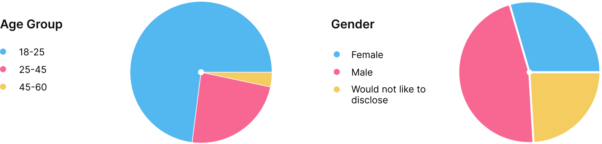
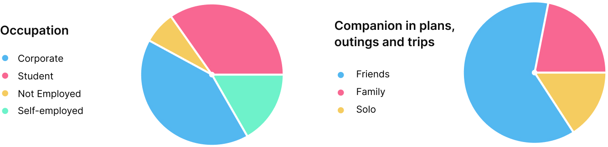
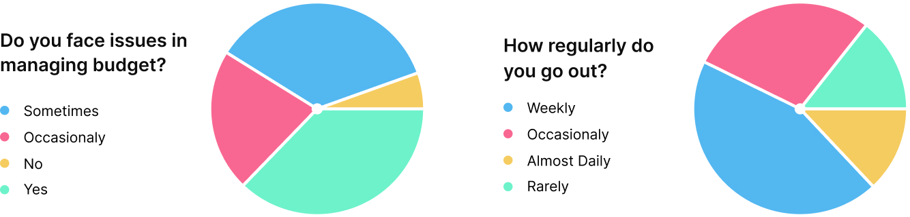
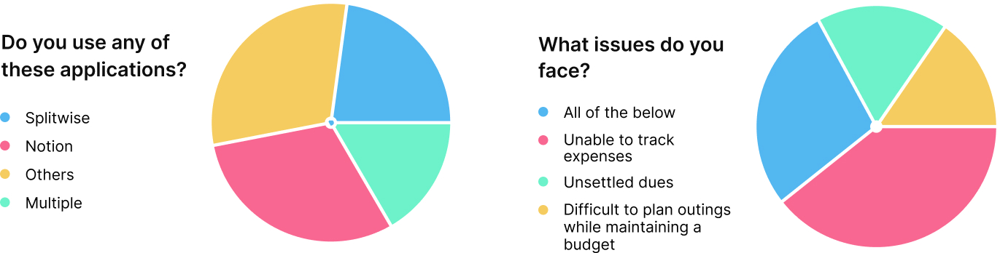

#1
primary research
Almost 75% of people face some kind of an issue in managing their
plans, budget and expenses.
64% of people regularly go out/plan outings/events/trips with
friends, while another 21% don't go out much but would love to do
so.
This space has grown massively in the past few years, specifically
among Generation Z. People love hanging out, trying new things and
places, meeting people, travelling and exploring, even solo.
Hence, naturally, this is an integral component in planning
expenses and budgets when considering this specific age group.
A majority of people have tried a tool/application to manage their
expenses and budget.
There are all kinds of applications available for the users to
address a variety of problems and use-cases. The fact that people
use applications specifically for this problem is a positive sign
in the sense that they realise they need of using a tool to help
them solve their issues, in this case, their budget and expense
management.
data:




#2
user interviews
Apart from the major issues like having to juggle multiple
applications to achieve the common goal of managing personal
expenditure and budgeting. The interviews highlighted some more
unique pain points they face currently:
#1 Most of people feel that splitting expenses and their budget
management go hand-in-hand, but there are no apps that offer both
of them together, hence, it is cumbersome and irritating.
When talking about budget & expenses, specifically for this age
group, things like settlements due, routine expenses, events,
plans and outings are integral to it. Even though there are
applications there to deal with the different aspects of it, there
is none that offers a solution to all of them in one application.
#2 Even while using applications like splitwise, which are
designed for splitting, most people have unsettled dues.
People of this age, have many shared expenses and the thing with
shared expenses, specifically among friends is that they are
usually like they will pay later, but they end up forgetting about
it. Even while using bill-splitting applications, they tend to not
care and not settle their dues for long.
#3 People find it awkward to ask for their money back from friends
and acquaintances.
People are usually sensitive when it comes to money, specifically
when there is some form of a relationship between the two parties.
Hence, they feel awkward asking them to settle dues / return the
amount owed.
#4 They fail to regularly record their expenses and in most cases,
they eventually give up.
Recording expenses regularly is a task, and while people try to
stay regular they eventually give up.
#5 They have to pass out on fun experiences in the latter half of
the month.
In many cases, users are much more casual in terms of how they
manage and spend their money in the first half of the month than
second, which translates to them cancelling out on plans and
delaying stuff they would have hoped/wanted to experience in the
latter half of the month.
#6 Planning outings with friends is a daunting task as everyone
has different choices and budget constraints.
areas of excitements 🤩
#1 People love to go on outings and plan trips, whether solo or
group.
This is one thing common in the majority of people in this age
group, they love exploring and trying new places, planning out
trips and events and experimenting with different things. Hence,
it opens up an opportunity to capitalize on this emotion and
harness it.
#2 Saving money to fulfil their wishlist.
Considerable amount of people like to save some portion of their
pocket money / income in order to fulfill items from their
wishlist.
#4
current solutions
#5
defining success